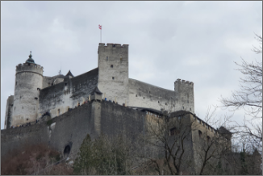

|  | 이탈리아 | 오스트리아 잘츠 부르크 호엔잘츠부르크 성 해발 542m 산 위에 위치한 방어용 성으로 중부 유럽의 성채 중 완벽한 규모로 현존하는 최대의 성이다. 1077년에 지어졌으며 1500년을 전후해서 대주교 레오나르드에 의해 증축되었고 1618년에 이르러 대주교 막스에 의해 오늘날의 모습을 갖추게 된다. 성 내부에는 성채 박물관(Festung Museum) 및 라이너 박물관(Rainer Museum)도 함께 있다. 성채 박물관에는 각종 무기 및 성에서 사용하던 각종 식기류 등을 볼 수 있고 죄수들을 고문할 때 쓰였던 각종 고문 기구들을 전시한 방도 있다. 성 옥상에서 내려다보는 시내 전경 또한 멋지다. 이 성은 시내 어디에서나 보이는 도시의 이정표 역할을 하는 시의 상징이다. | ||
|---|---|---|---|---|
| 유럽여행 | 방어용 성 | 여행추천 | 중부 유럽의 성채 중 완벽한 규모로 현존하는 최대의 성이다. | |
| 여행시간 | 2시간 | 여행일자 | 2022. 12. 01 | |
잘츠부르크 대성당에서 나와서 왼쪽에 있는 광장이 카피텔 광장이다. 성당에서 나와서 광장의 정면을 보면 건물 벽에 Stiegkeller, Peterskeller라고 쓰인 간판이 보인다. 건물 옆의 골목으로 들어가면 성으로 올라가는 산악열차(Festungbahn)의 승강장이 보인다. 열차를 타지 않고 도보로 올라간다면 성까지 약 30분 정도 소요